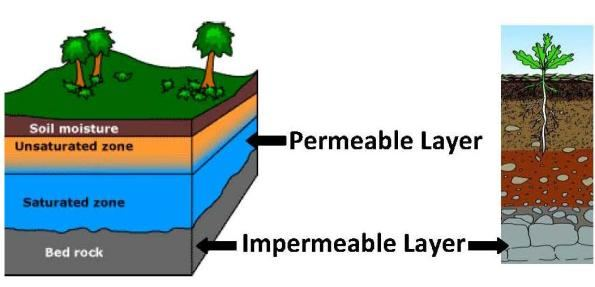

The Surah elevates the person who seeks guidance over the one who considers himself self-sufficient.
যে ব্যক্তি নিজেকে স্বয়ংসম্পূর্ণ বলে মনে করে তার উপরে যে ব্যক্তি নির্দেশনা চায় তাকে সূরাটি উঁচু করে।
Tafsir of the Surah Section 1 of Chapter 80 [Verse 1-16]: One that deserves Attention
80 অধ্যায় [আয়াত 1-16] এর সূরা 1 ধারার তাফসির: মনোযোগের যোগ্য একটি
Frowned and turned away because there came to him the blind man. But what could tell thee but that perchance he might grow? Or that he might receive admonition, and the teaching might profit him? As to one who regards Himself as self-sufficient, to him do thou attend, though it is no blame on thee if he grows not. But as to him who came to thee striving earnestly and with fear, of him was thou unmindful. By no means! For it is indeed a message of instruction— therefore let who-so will keep it in remembrance—in Books held in honor, exalted, kept pure and holy by the hands of scribes, honorable and pious and just.
ভ্রূকুঞ্চিত এবং মুখ ফিরিয়ে নিল কারণ সেখানে অন্ধ লোকটি তার কাছে এসেছিল। কিন্তু সে বড় হওয়ার সম্ভাবনা ছাড়া আর কী বলব? নাকি সে উপদেশ গ্রহণ করতে পারে এবং শিক্ষা তার উপকার করতে পারে? যে ব্যক্তি নিজেকে স্বয়ংসম্পূর্ণ মনে করে, আপনি তার কাছে উপস্থিত হন, যদিও সে বড় না হলে তাতে আপনার কোন দোষ নেই। কিন্তু যিনি তোমার কাছে এসেছিলেন প্রাণপণে এবং ভয়ের সাথে, তার ব্যাপারে তুমি উদাসীন ছিলে। কোনভাবেই! কারণ এটি প্রকৃতপক্ষে নির্দেশের একটি বার্তা - তাই যারা এটিকে স্মরণে রাখবে - সম্মানিত, উচ্চপদস্থ, লেখকদের হাতে শুদ্ধ ও পবিত্র, সম্মানিত এবং ধার্মিক এবং ন্যায়বিচারে রাখা বইগুলিতে।
Once, several chiefs of Makkah were sitting in the Prophet's (pbuh) assembly and he was trying to convince them to accept Islam, a blind man, Hadrat Ibn Umm Makhtum, approached him. The Prophet (pbuh) ignored him and turned his face. It was then that the Surah was revealed. The Prophet (pbuh) immediately called him back and spoke to him. The last paragraph of the above verses refers to the Scribe Angels. They are the angels of the Arsh, associated with the CCU (Central Computer of the Universes, discussed in Section-9 of Chapter-6).
একবার, মক্কার বেশ কয়েকজন সর্দার রাসূল (সাঃ) এর সমাবেশে বসে ছিলেন এবং তিনি তাদের ইসলাম গ্রহণের জন্য বোঝানোর চেষ্টা করছিলেন, এক অন্ধ ব্যক্তি হযরত ইবনে উম্মে মাখতুম (রাঃ) তাঁর কাছে আসেন। নবী (সাঃ) তাকে উপেক্ষা করে মুখ ফিরিয়ে নিলেন। তখনই সূরাটি অবতীর্ণ হয়। নবী (সাঃ) সাথে সাথে তাকে ডাকলেন এবং তার সাথে কথা বললেন। উপরের আয়াতের শেষ অনুচ্ছেদটি স্ক্রাইব ফেরেশতাদের নির্দেশ করে। তারা সিসিইউ (মহাবিশ্বের কেন্দ্রীয় কম্পিউটার, অধ্যায়-6-এর অধ্যায়-9-এ আলোচিত) এর সাথে যুক্ত আরশের ফেরেশতা।
Woe to man! What has made him reject God? From what stuff has He created him? From a drop He has created him and then molded him in due proportions. Then does He make His path smooth for him. Then He causes him to die and puts him in his grave. Then when it is His will, He will raise him up. By no means has he fulfilled what God has commanded him! Section 3 of Chapter 80 [Verse 24-32]: Provisions
মানুষের জন্য হায়! কি তাকে ঈশ্বর প্রত্যাখ্যান করেছে? কোন জিনিস থেকে তিনি তাকে সৃষ্টি করেছেন? একটি বিন্দু থেকে তিনি তাকে সৃষ্টি করেছেন এবং তারপর তাকে যথাযথ অনুপাতে গঠন করেছেন। তারপর তিনি তার জন্য তার পথ মসৃণ করে দেন। অতঃপর তিনি তাকে মৃত্যু ঘটান এবং কবরে রাখেন। অতঃপর যখন তাঁর ইচ্ছা হবে তখন তিনি তাকে উঠাবেন। ঈশ্বর তাকে যা আদেশ করেছেন তা তিনি কোনোভাবেই পূরণ করেননি! অধ্যায় 80 এর ধারা 3 [পদ 24-32]: বিধান
Then let man look at his food: For that We pour forth water in abundance, and We split the land in fragments, and produce therein corn and grapes and nutritious plants, and olives and dates and enclosed Gardens dense with lofty trees, and fruits and fodder for use and convenience to you and your cattle.
তারপরে মানুষ তার খাবারের দিকে তাকাই: এর জন্য আমরা প্রচুর পরিমাণে জল ঢেলে দিই, এবং আমরা জমিকে টুকরো টুকরো করে বিভক্ত করি এবং তাতে ভুট্টা, আঙ্গুর এবং পুষ্টিকর উদ্ভিদ, এবং জলপাই এবং খেজুর এবং উঁচু গাছের সাথে ঘেরা বাগান, এবং আপনার এবং আপনার গবাদি পশুদের ব্যবহারের জন্য এবং সুবিধার জন্য ফল এবং পশুখাদ্য উৎপন্ন করি।
The above verses do not refer to regular rainfall, which nourishes the low-lying green plains. They speak of hilly terrains that produce corn and grapes, as well as deserts and steppes that yield olives, dates, and enclosed gardens (oases). Thus, the verses refer to groundwater that slowly flows through the permeable layers of the Earth, nurturing the growth of trees in hilly terrains, deserts, and steppes.
উপরোক্ত আয়াতগুলো নিয়মিত বৃষ্টিপাতের কথা উল্লেখ করে না, যা নিচু সবুজ সমভূমিকে পুষ্ট করে। তারা পাহাড়ি ভূখণ্ডের কথা বলে যা ভুট্টা এবং আঙ্গুর উৎপাদন করে, সেইসাথে মরুভূমি এবং স্টেপস যা জলপাই, খেজুর এবং ঘেরা বাগান (মরুদ্যান) দেয়। এইভাবে, শ্লোকগুলি ভূগর্ভস্থ জলকে নির্দেশ করে যা ধীরে ধীরে পৃথিবীর প্রবেশযোগ্য স্তরগুলির মধ্য দিয়ে প্রবাহিত হয়, যা পাহাড়ি অঞ্চল, মরুভূমি এবং স্টেপসে গাছের বৃদ্ধিকে লালন করে।
FIGURE 80.1: Ground Water

চিত্র 80_1 / Figure 80_1
চিত্র 80.1: ভূগর্ভস্থ জল
চিত্র 80_1 / Figure 80_1
Rainwater seeps into the Earth, raising the level of groundwater worldwide. The water flows through the permeable layers due to the land's layered structure and the variations in ground pressure. The permeable layer consists of fractured stones, gravel, and sand. It is found worldwide, typically within a depth of 750 meters. Even when the topsoil is dry, there may still be a significant amount of groundwater in the permeable layer. The estimated total volume of this water is equivalent to a 55-meter-thick layer spread across the entire surface of the Earth.
বৃষ্টির পানি পৃথিবীতে প্রবেশ করে, বিশ্বব্যাপী ভূগর্ভস্থ পানির স্তর বাড়ায়। ভূমির স্তরবিশিষ্ট গঠন এবং ভূমির চাপের তারতম্যের কারণে পানি প্রবেশযোগ্য স্তরের মধ্য দিয়ে প্রবাহিত হয়। ভেদযোগ্য স্তরটি ভাঙা পাথর, নুড়ি এবং বালি নিয়ে গঠিত। এটি বিশ্বব্যাপী পাওয়া যায়, সাধারণত 750 মিটার গভীরতার মধ্যে। এমনকি উপরের মাটি শুকিয়ে গেলেও, ভেদযোগ্য স্তরে এখনও উল্লেখযোগ্য পরিমাণে ভূগর্ভস্থ জল থাকতে পারে। এই জলের আনুমানিক মোট আয়তন পৃথিবীর সমগ্র পৃষ্ঠ জুড়ে ছড়িয়ে থাকা 55-মিটার পুরু স্তরের সমান।
At length, when there comes the deafening noise: That Day shall a man flee from his own brother and from his mother and his father, and from his wife and his children. Each one of them that Day will have enough concern to make him indifferent to the others. Some faces that Day will be beaming, laughing, rejoicing. And other faces that Day will be dust-stained, blackness will cover them. Such will be the Rejecters of God, the doers of iniquity.
দীর্ঘ সময়ে, যখন বধির আওয়াজ আসে: সেদিন একজন ব্যক্তি তার নিজের ভাই থেকে, তার মা এবং তার পিতার কাছ থেকে এবং তার স্ত্রী এবং তার সন্তানদের কাছ থেকে পলায়ন করবে। সেই দিন তাদের প্রত্যেকেরই যথেষ্ট উদ্বেগ থাকবে যে তাকে অন্যদের প্রতি উদাসীন করে তুলবে। কিছু মুখ সেদিন হবে উজ্জ্বল, হাস্যোজ্জ্বল, আনন্দিত। আর অন্য মুখগুলো সেদিন ধূলিমাখা হবে, কালোতা তাদেরকে ঢেকে দেবে। তারাই হবে ঈশ্বরের প্রত্যাখ্যানকারী, অন্যায়কারী।